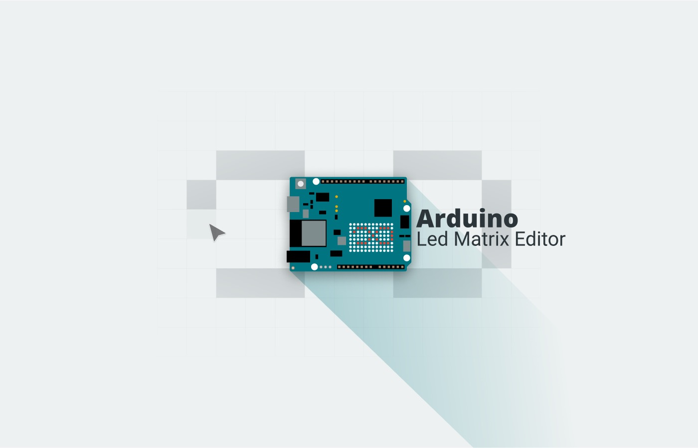

Arduino LED Matrix Editor
The UNO R4 WiFi ships with a 12×8 LED matrix, but code arrays intimidate beginners. A drawing tool that exports ready-to-upload code — built in a few days, with the documentation drawer's HTML and CSS written by me.